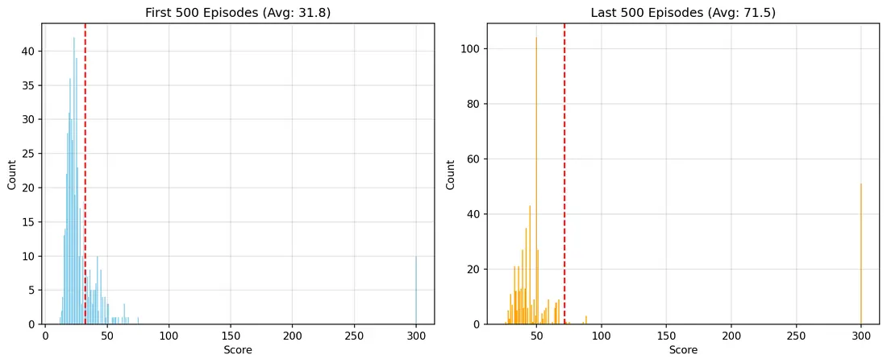
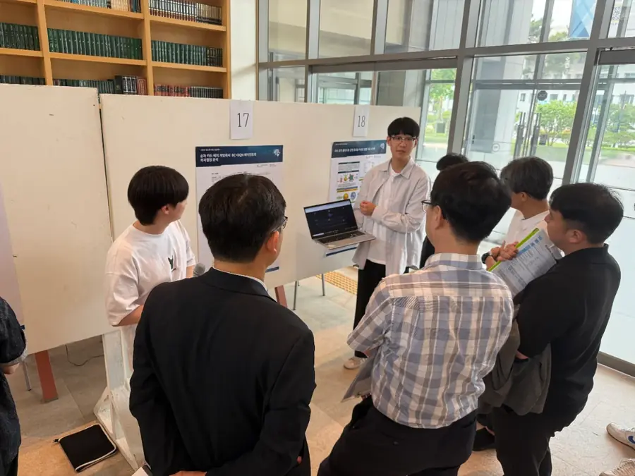
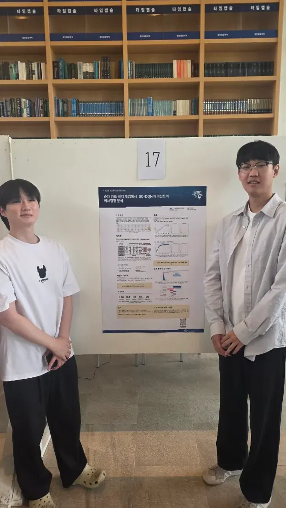
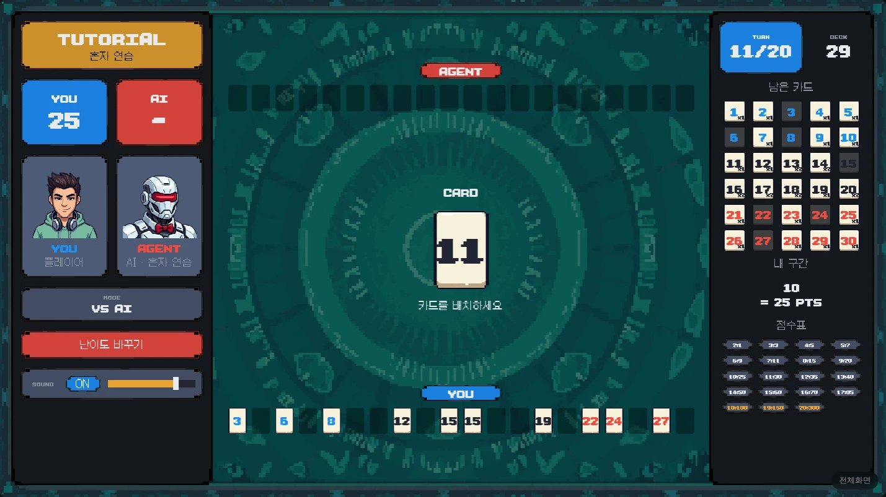

exp/01 · 강화학습
STREAMS 에이전트
사람처럼 두는 보드게임 AI. 만들고, 의심하고, 다시 만들기까지.
01 · 프로젝트 개요
숫자 카드 20장, 20칸, 하나의 긴 흐름
매 턴 받은 카드를 빈칸에 놓아, 왼쪽부터 같거나 커지는 구간을 길게 잇는 게임입니다. 이 게임을 두는 AI를 만들었습니다.
- 71.5캡스톤 발표값앞으로 나올 카드를 보고 낸 점수
- 24.4사람과 같은 정보로 재면사람 평균 31.3점보다 낮음
- 48.8v17 · 처음부터 다시사람과 같은 정보, 고정 덱 2,000판
- 기간
- 2025.09 – 현재
- 팀
- 캡스톤 2인 → 이후 혼자
- 역할
- 에이전트 · 웹게임 · Unity · 연구
- 스택
- PyTorch · SGAZ · Unity 6 · Cloudflare
02 · 개발 계기
좋아하던 게임을, AI가 직접 두게 하고 싶었습니다
게임을 직접 구현해 보고 싶었고, 마침 AI를 공부하고 있었습니다.
한 판이 빠르고, 데이터 모으기 좋고, 규칙이 단순합니다.
예외가 너무 많아 "이럴 땐 이렇게"를 다 적을 수 없었습니다.
03 · 내가 한 일
캡스톤은 둘이, 그 뒤는 혼자
나팀원
- 캡스톤 시작에이전트웹게임데이터 분석
- 웹게임 배포
사람 플레이 수집
- 우수상
단과대학 캡스톤 경영대회
- 재검증정보 누수 발견
- v17 재학습SGAZ · 난이도
- Unity 6 서비스친구 대전 · 통계
- 사람 모델 연구데이터 수집 중
04 · 개발 과정
학습하고, 배포하고, 사람의 플레이로 다시 학습
20칸 전체를 한 구간으로. 고득점형.
버리는 칸을 두고 안정적으로.
강화학습은 저점이 어느 정도 보장되니 고득점을 노리는 쪽을 택했고, 사람 데이터에서도 Fullstream의 평균이 더 높았습니다.

05 · 결과
평균 71.5점, 사람과 대결하는 웹게임


이 점수엔 정보 누수가 있었습니다. 07에서 이어집니다 ↓
06 · 성과
우수상, 그리고 직접 모은 1,346판


07 · 지금까지 하고 있는 일
의심하고, 같은 조건에서 다시 만들고 있습니다
이상한 수를 따라가 보니, 앞 카드를 보고 있었습니다
실제 게임에서 AI가 사람이라면 두지 않을 자리에 10번대 숫자를 두며 스스로 보드를 망쳤습니다. 둘 칸을 걸러 주던 확률 마스크부터 다시 봤습니다.
마스크가 deck[ci+1:]로 칸을 골랐습니다.
같은 숫자를 막아 덱의 97%에서 안전한 칸이 일찍 사라졌습니다.
배포 서버에 PyTorch가 없었습니다. AI의 수 33,100개를 복원해 확인했습니다.
몇 판만 잰 58.5점이 2,000판으로는 47점이었습니다.
같은 정보로, 처음부터 다시 학습
다음 카드 확률을 정확히 계산할 수 있는 게임이라 Stochastic Gumbel AlphaZero로 바꿨고, 가치 타깃을 세 번 바꾼 끝에 학습이 섰습니다.
강할수록, 사람답지 않게 둡니다
사람 모방 정책과 SGAZ를 β로 섞어 5단계를 만들었습니다. 단계를 바꿔 보세요.
덱과 AI는 서버에만, 기록은 다음 학습으로

약한 AI가 아니라, 그 실력의 사람처럼
사람의 수를 사람 모방 정책은 66.8%, SGAZ는 47.2% 맞힙니다. 실력 값을 넣으면 그 실력의 사람처럼 두는 모델(Maia-2 방식)이 다음 목표입니다.
- afterstate TD47.5점
- SGAZ48.8점
- piKL 난이도5단계
- 실력별 사람 모델데이터 수집 중
08 · 인사이트
숫자는 조건과 함께 봅니다
상을 받은 점수가 앞 카드를 본 숫자였습니다. 이제는 모델이 무엇을 보는지부터 확인합니다.
부등호 하나, 서버에 없던 라이브러리 하나가 체감 성능을 바꿨습니다.
"점수가 너무 다르다"는 피드백이 재검증의 출발점이었습니다.